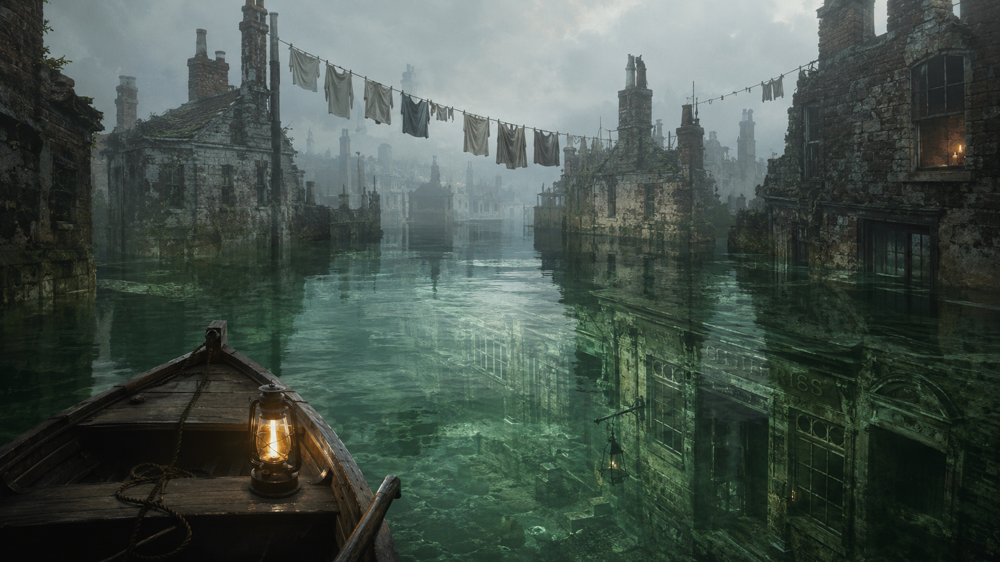
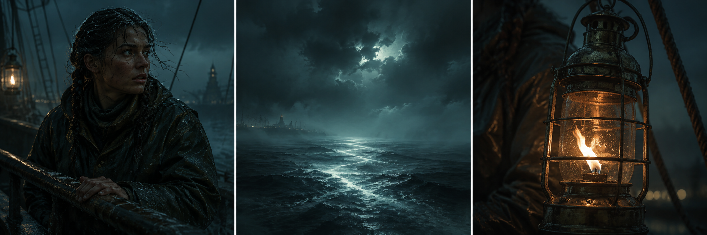
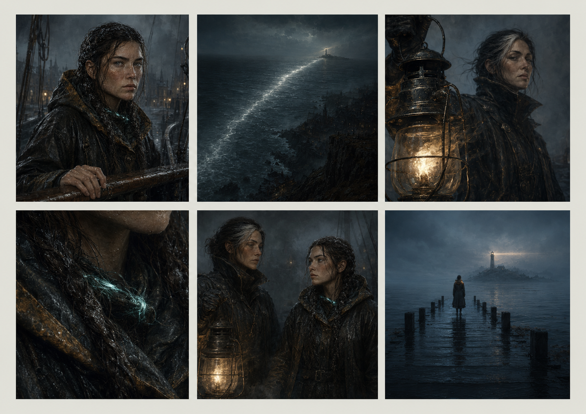

Listener at the water's edge
Your world
The Undersong
A drowned city. A song that never quite ends.
OverviewCharactersPlacesLore

The city beneath the songA short film in six scenes
One Chat icon in the top-right of Studio. It opens World Chat in a world and Builder Chat in a production, with a visible subject and the same conversation, upload, dictation and review controls you already use.
This is the approved design reference. The author approved the design on 13 October 2026, with the model-choice bullet removed. Application implementation is in progress.
Open the existing / proposed page comparison. This renders the corrected Develop page and existing model and effort picker, with the restored master 195 reference beside it. The overview controls below are generated from the native component. It is the model-control reference for this proposal.
Press Chat in the app header. Navigate using World, Production and Shot 4. Type a draft, change pages, then use “Use this page” or the conversation menu. The example keeps drafts and attachments per subject. Press + to preview attachment chips. Press the microphone, stop it, then Finish example to append editable dictated words.
Your world
A drowned city. A song that never quite ends.

The city beneath the songListener at the water's edge
A short film in six scenes
Design fixture only. Dictation uses example words without requesting microphone access. File selection uses names only and never reads/uploads bytes. Messages use example replies; no model calls, tools, generation, paid requests or production edits. A running dot is illustrative. Review opens a placeholder. The phone fixture adapts to viewport width; keyboard-safe positioning and resizing require later application checks.
Chat is the first icon on the right, before Proposals, Activity, Settings and Account. The existing Activity/Settings pair stays together.
Your world
A drowned city. A song that never quite ends.
Listener at the water's edge
A short film in six scenes
Opening Chat uses this world’s conversation. Its context is visible above the messages and beside the composer.
Your world
A drowned city. A song that never quite ends.
Listener at the water's edge
A short film in six scenes
Opening from Saltlight resumes its production conversation, using existing cards and review controls.
Short film



Maren hears a voice beneath the morning tide.
The context label names Shot 4. A proposal retains that exact shot and version when it is reviewed.
Short film
Maren hears a voice beneath the morning tide.
The World conversation and draft stay in view after navigating to Shot 4. Use this page explicitly resumes or creates the shot’s conversation.
Short film
Maren hears a voice beneath the morning tide.
The chat icon has a quiet running dot. Closing hides the conversation; Activity continues to carry application-wide work and decisions.
Your world
A drowned city. A song that never quite ends.
Listener at the water's edge
A short film in six scenes
A sheet below the persistent titlebar gives messages and the composer independent space. Close returns focus to Chat. Phone controls are at least 44px.
Short film
Maren hears a voice beneath the morning tide.
Switching worlds pauses this visible conversation and disables send. Open this world’s chat resumes The Stillwater. The prior draft remains in The Undersong.
Your world
A drowned city. A song that never quite ends.
Listener at the water's edge
A short film in six scenes
The persistent icon explains how to begin. This increment offers Open world; no unscoped world tools or new pre-world assistant.
Your worlds
Open a world to continue building with Arke.
Use the existing + picker, drop or paste. Private attachment chips retain kind, readability, explicit File in world and Stop referring to controls. Attaching does not send a message.
Short film
Maren hears a voice beneath the morning tide.
The microphone starts dictation. Listening is stated in words; press it again to Stop and transcribe. Starting dictation stops reply playback.
Short film
Maren hears a voice beneath the morning tide.
Transcribing locally is distinct from listening. Completed words append to the existing draft for correction; Send remains a separate author action.
Short film
Maren hears a voice beneath the morning tide.
An unavailable dictation control remains focusable so its reason is reachable. A missing local model or denied microphone does not prevent typing or file attachments.
Your world
A drowned city. A song that never quite ends.
Listener at the water's edge
A short film in six scenes
Attach, Dictate and Send retain 44px targets. Model and optional Read replies controls fit the toolbar; the composer and attachment strip remain independently usable.
Short film
Maren hears a voice beneath the morning tide.
Author approval. 13 October 2026. The author approved this design and requested immediate implementation, with the model-choice bullet removed. Revision 6 records that amendment; the provider mark, model name and separate effort control remain.
Stable entry point. Prepend Chat to the right-hand application icon group, retaining the established Proposals, Activity, Settings and Account order. Keep the centred desktop wordmark and native window-control space. Launch before setup follows its existing no-controls rule.
Visible subject. World Chat opens in a world, Builder Chat in a production, and the existing scene/shot/workspace/Bench conversation in its matching context. Name the world and subject; reuse the existing conversation and cards. One entry point never combines unrelated world transcripts.
Opening and navigation. Opening a manually closed panel follows the current page. Once open, navigation retains its conversation, draft and running turn. Use this page resumes or creates the new subject’s conversation; it never rebinds the old thread. Conversations offers explicit return to prior threads. Switching saves drafts per conversation.
Captured authority. A send captures the conversation’s permitted subject and applicable selection. Navigation cannot retarget a run, result, media disclosure, lease or approval. When the viewed page differs, the visible conversation’s scope wins; a different page’s selection is not silently included.
Cross-world switch. Opening another world detaches prior-world live tool access, disables the old composer and explains the boundary. The old world’s history and draft stay durable there. Open this world’s chat is the explicit switch. In-flight work must follow the existing world ownership and stop rules.
Layout and existing docks. Desktop uses a right side panel, initially 400px, resizable within 360–560px when workspace room permits. Under 1100px use a sheet rather than squeeze the editor. Phone uses a sheet below the titlebar with a fixed composer above the on-screen keyboard. Existing Arke/Studio docks must show this same conversation instance, with an explicit expand action; never duplicate cards or Stage controls.
Closing and attention. Close or Escape hides the conversation and retains its draft. Closing does not stop work. A quiet dot on Chat identifies a running or newly replied conversation; Activity remains the application-wide source of jobs and decisions. An arriving card never opens Chat or applies a proposal automatically.
Focus and other surfaces. Chat has an accessible name and expanded state. Opening focuses the composer; closing restores the icon. Phone sheet traps focus and isolates the workspace beneath it. Activity, Settings and account surfaces overlay or temporarily suspend the chat without losing its state; dismissing them returns to the retained conversation. No keyboard shortcut is introduced in this turn.
No world. Outside an open world, Chat offers the existing Open world path with a disabled composer. This first design does not introduce a new world-creation agent or a master delegating agent.
Existing composer parity. Reuse components/composer.tsx and ComposerMic from dictation.tsx, with their existing text editor, + picker, drop/paste, attachment kind/readability/refusal chips, Stop referring to and explicit File in world, microphone, model controls and optional Read replies. World model presentation stays read-only; scene/shot docks retain their existing no-model-chip rule. A global host must preserve these capabilities rather than replace the composer with a bare input.
Dictation belongs to its conversation. Idle, Listening and Transcribing locally are distinct and stated in words. The existing local transcription path appends editable words to the prior draft, never submits them and never treats dictation as an audio attachment. Starting capture stops reply playback. A missing model, unavailable microphone or denied permission has a focusable named reason; typing still works. Navigation does not retarget capture. Conversation switching waits for dictation to finish. Closing the panel stops capture and retains local transcription for the original conversation; closing generation still does not stop generation. These lifecycle bindings need application acceptance after approval.
Composer spacing. The text editor and placeholder reserve their own height above the toolbar, including multiline drafts. Leave at least 8px between the editor box and the first tool, and at least 8px below the last tool. Centre icon-only controls on both axes with zero native button padding. Keep the model/effort pills at turn 195 sizes; grow or wrap the toolbar rather than clipping its controls. These rules apply to the existing composer and the proposed host at desktop and phone widths.
Native model control reference. Turn 195 has been restored exactly from d5c1a0ac and cross-checked with restoration PR 1576, preserving all other turns. The overview model controls are generated from ModelChip; the full native comparison renders the existing page and picker. Compare matching GPT-5.4 / High specimens, typography, provider plate without a choice bullet, chip dimensions, search, rows, footer, cards and effort menu against 195a-g. Preserve the master’s binding 34px desktop and 48px phone rows: static frame 195b compresses its flex rows, a documented historical drawing difference, not a sizing target. World Chat remains a fixed Settings name, no mark/chevron/effort; hide it when no name is configured. Reuse search, groups, recent choices, details and scope controls; never infer a catalogue default for an unpinned session. The source-backed preview has verified composer bounds and hit targets on mouse and touch layouts.
Acceptance after approval. Verify upload by picker/drop/paste, attachment retention/removal/readability/refusals, idle/listening/transcribing/unavailable dictation, typed plus dictated draft, no auto-send, reply playback interruption, microphone release on close and original conversation ownership; world/production/shot/Stage/Cut/Bench context, one mounted conversation/card, draft retention, navigation mid-run, stale cards, world switch and refresh, safe tool ownership, phone keyboard, focus restoration, narrow layout and existing Activity/Settings behavior. The design fixture demonstrates interaction only; it is not application acceptance or a media reviewer.